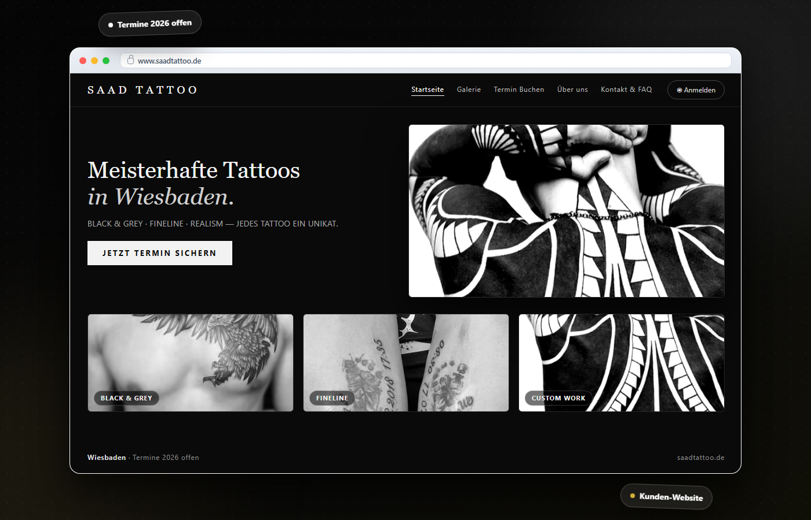

I like building things
people actually use.
Developer & BWL student in Wiesbaden. Building Nelurio — an AI study platform live in beta — plus NexDeutsch, Washhalle and client work like Saad Tattoo. Go · React · AI. Learning by shipping, every day.

Things I've built and shipped
Four products across four problem spaces — AI platform, learning, real business operations and client web design. Each one taught me a different layer of the stack.

Nelurio
AI study assistant for university students — live in beta.
Record a lecture → AI writes the summary, schedules spaced-repetition reviews, generates flashcards & quizzes, and a tutor answers from your own materials with citations. Built solo — backend, frontend, AI, infra, deployment.

NexDeutsch
German vocabulary learning platform.
My earlier product for German learners — vocabulary training with structured practice sessions. Nelurio's review engine was born from what I learned building this one. Currently being reworked with everything I know today.

Washhalle App
Operations app for a car-wash business.
Built for an actual car-wash location: day-to-day operations, tracking and workflow. My first lesson in software for a real customer with real constraints — not a tutorial project.

Saad Tattoo — Studio Website
Client website for a tattoo studio in Wiesbaden.
Designed and launched a booking-focused studio website using Wix combined with AI-generated visual assets. My first paid client project — concept, design, content and launch for a real business.
What I work with
Certified & continuously learning
Beyond certificates: strong with Microsoft Office and Excel — including Excel-based programming and automation. Generally fast with anything computer-related, and experienced in collaborative project work.
Developer with a business brain — and room to grow
How I work: I pick a real problem, ship the smallest working version, then iterate from feedback. Nelurio exists because I kept rebuilding the same study tools for myself — at some point it made sense to build the platform once, properly.
What I'm looking for: a Werkstudent or Praktikum position where I can work on a real codebase with experienced developers. I know how to build alone — now I want to learn how great teams build together, and grow on a professional team.
Honest boundaries: I haven't worked in a large team yet, and my German keeps improving (B2→C1). What I bring instead: proven ability to ship complete systems alone, real production experience across the full stack, and the habit of figuring things out fast.
Let's talk.
If you have a Werkstudent or Praktikum opening — or just want to look at the code — I'd love a 5-minute live demo of Nelurio. No slides.